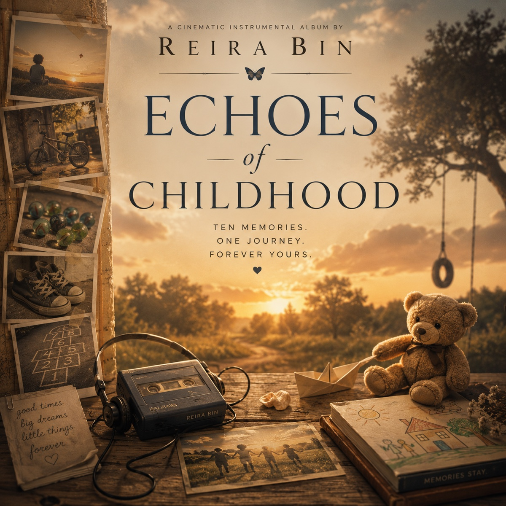
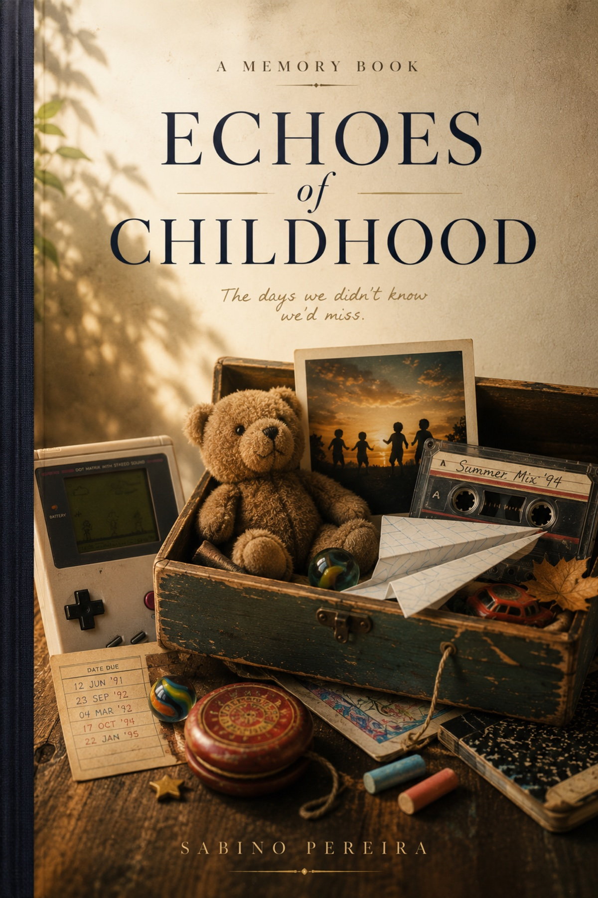

A music and book experience
Echoes of Childhood
A cinematic journey through the memories that made us—and the quiet discovery that the child we were never truly left.

Album · Reira Bin · 6 November 2026
Music made to awaken memory.
Echoes of Childhood does not tell one person's story. It invites every listener to return to their own.
Across twelve cinematic instrumental pieces, felt piano, soft strings, celesta, glockenspiel, acoustic guitar and delicate woodwinds evoke Saturday mornings, long summers, favourite toys, school corridors, first emotions, Christmas wonder and the people who made the world feel safe. The aim is not spectacle. It is emotional recognition: every note like an old photograph, every pause like a breath.
Close your eyes. Go back. Feel again.
Twelve memories · One journey
The tracklist
- 01Before the World Got Loud
- 02Saturday Mornings
- 03The Long Summer
- 04The Toy We Couldn't Put Down
- 05Until the Streetlights Came On
- 06The Bell Between Lessons
- 07The First Butterfly
- 08The Hands That Held Ours
- 09Christmas Morning
- 10One Last Summer Evening
- 11Echoes of Childhood
- 12Home Was Never a Place — Epilogue
Memory Book · Sabino Pereira · Amazon pre-order open
A book to read slowly.
A premium visual companion that gives the music room to become personal.
Each of the album's twelve memories becomes a reflective chapter. A full-page illustration opens the door, the narrated Memory Fragment connects the book to the music, and an intimate essay explores the universal feeling beneath it. This is not a memoir and it does not prescribe what childhood should have looked like. It leaves space for your own people, places and keepsakes to return.
The premium digital edition will be available from 13 October 2026.
“Some memories never fade. They simply find a new way to live inside us.”
Echoes of Childhood
The journey begins this autumn
Remember. Then carry it forward.
The premium digital edition arrives on 13 October 2026, with the Memory Book available to pre-order on Amazon. The album follows on 6 November 2026. Together, they form one quiet experience about wonder, gratitude and the homes we carry within us.